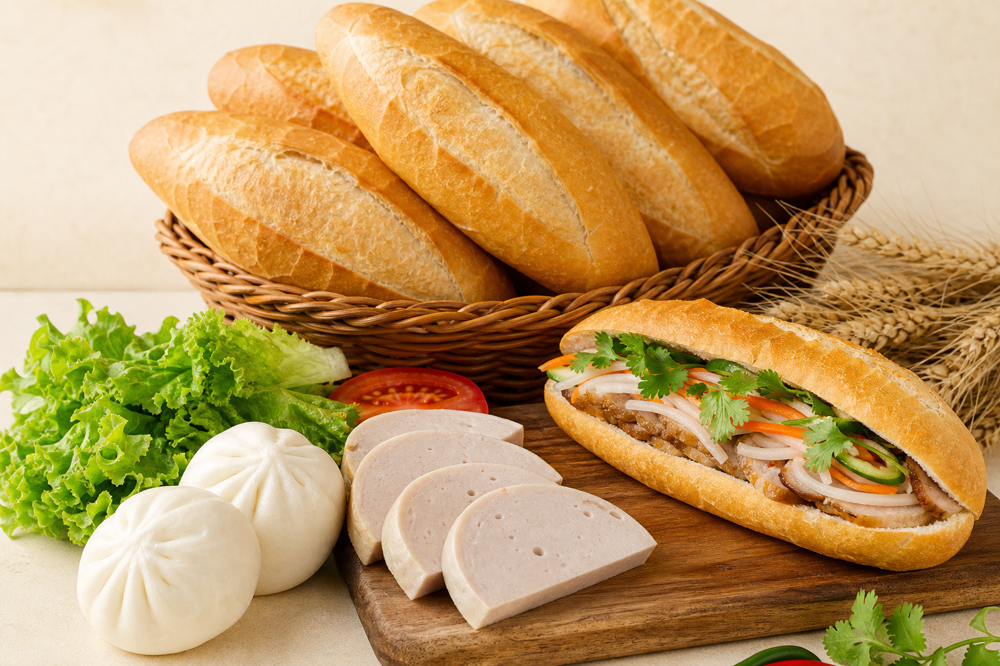
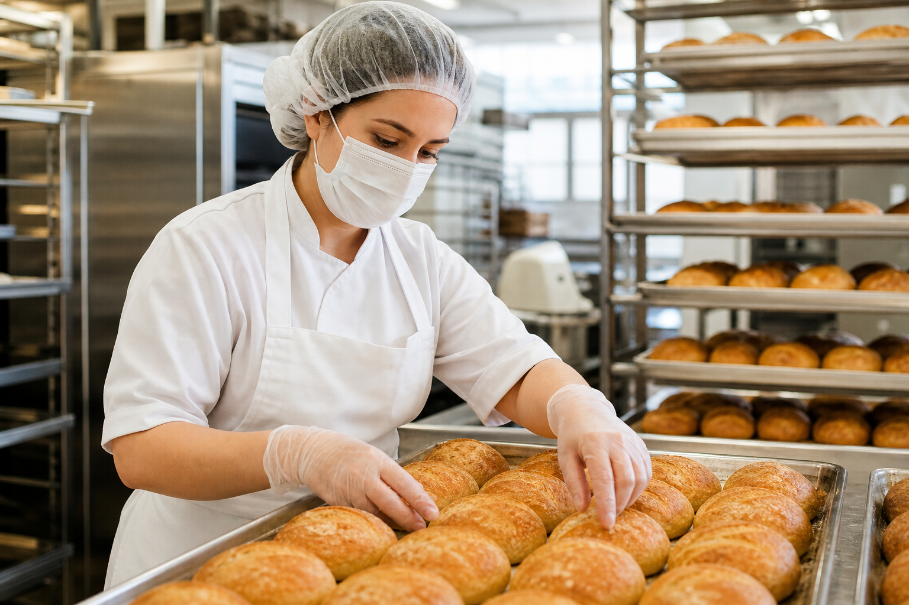

Chuẩn bị theo ngày bán
Tập trung độ tươi và hạn chế sản phẩm nằm chờ quá lâu.
Tiệm bánh tại Đakao · TP.HCM
Từ những ổ bánh nóng giòn buổi sớm đến đơn hàng số lượng lớn, Bánh Mì Đakao vẫn giữ một điều giản dị: làm mới mỗi ngày và phục vụ thật chỉn chu.

Bánh mì tươi · làm mới trong ngày

Những mẻ bánh mới là nhịp bắt đầu mỗi ngày tại Đakao.
Câu chuyện Đakao
Hơn 30 năm, Bánh Mì Đakao phục vụ từ bữa sáng mang đi đến những đơn bánh đều đặn cho quán và đối tác. Chúng tôi không cố làm mọi thứ cầu kỳ — chỉ giữ bánh tươi, vị quen và cách phục vụ đáng tin.
Vỏ giòn, ruột mềm, phù hợp bữa sáng Việt.
Bánh và món kèm được chuẩn bị theo nhịp bán thực tế.
Mua tại tiệm, đặt trước hoặc trao đổi đơn số lượng lớn.
Cách chúng tôi làm việc
Đó là cách cửa hàng tổ chức từng mẻ bánh, cân đối số lượng và chuẩn bị đơn đặt trước.
Tập trung độ tươi và hạn chế sản phẩm nằm chờ quá lâu.
Phù hợp cả khách ghé tiệm và những đơn cần giao định kỳ.
Đơn lớn được xác nhận về sản phẩm, số lượng và thời gian nhận.
Đakao phục vụ ai?
01 / Ghé tiệm
Xem những món quen, ghé cửa hàng hoặc đặt giao qua kênh phù hợp với bạn.
02 / Hợp tác
Trao đổi đơn số lượng lớn, lịch giao định kỳ và nhóm sản phẩm phù hợp với mô hình kinh doanh.
Ghé Bánh Mì Đakao